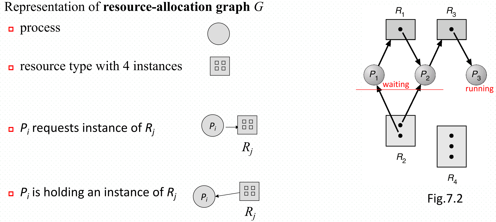
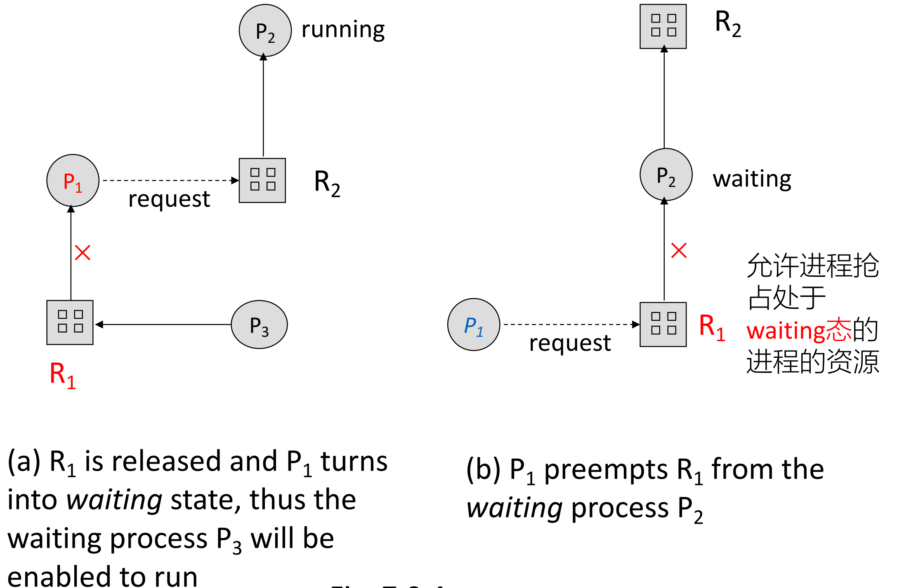
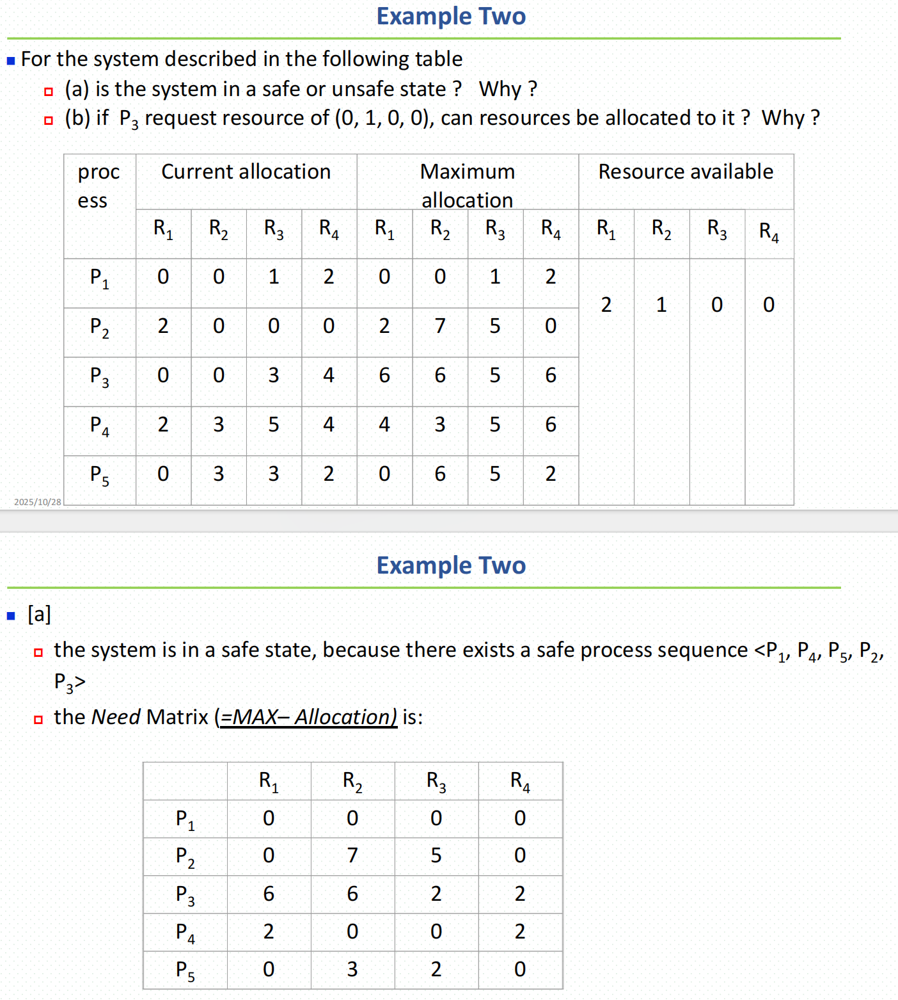
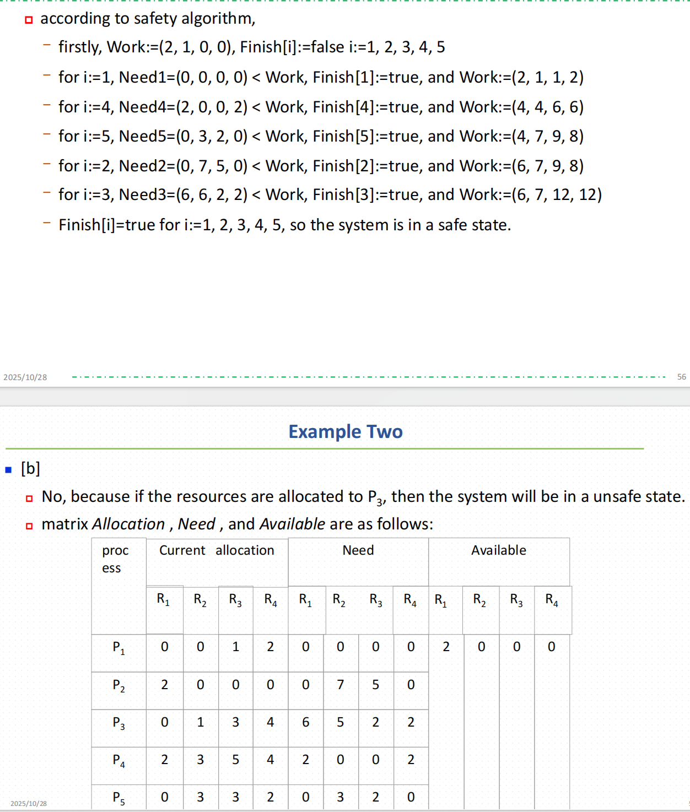
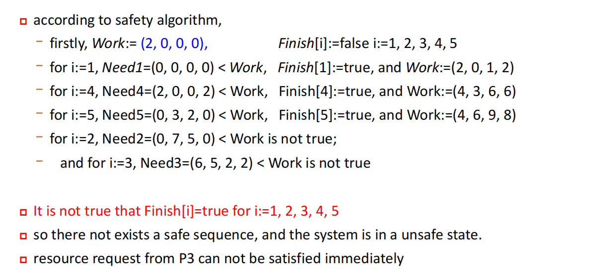
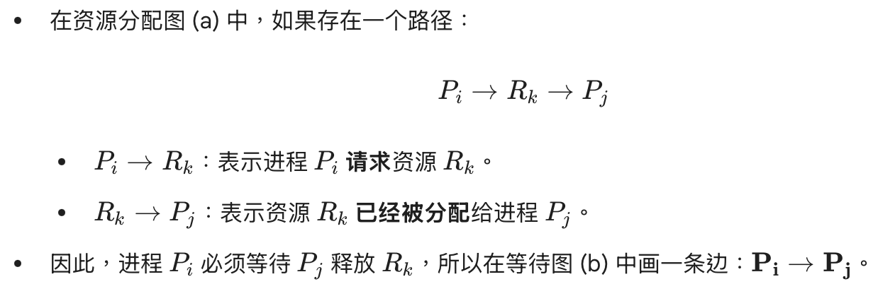

CH7--Deadlock
Deadlock
WHAT：two or more processes are permanently blocked because they are each waiting for the other to release a resource that they need to proceed.
WHY：mutual exclusive, non-preemptive, hold and wait, circular wait
HOW：break one of the 4 condition.
7.1 System Model
resource allocation model describe:
- resources allocated to processes
- process requesting resources
Each process utilizes a resource as follows:
request –> use –> release
7.2 Deadlock Characterization
- resource allocation graph

one resource has many instance
- Necessary conditions for deadlock
- mutual exclusive
- hold and wait
- Non-preemptive
- Circular wait
if we want to break the problem of deadlock, we must break one of the conditions.
we always break “hold and wait” or “circular wait”
當每个進程都占有N-1个instance且正等待第N台instance但該instance被其他進程占用時可能出現死鎖，故答案為1＋2＋3＝6
K=所有進程的資源總需求數L - 進程總數n
保證無死鎖的最少資源實例數為 K＋1
7.3 Prevent Deadlock
hold and wait
- guarantee a process hasn’t hold any resource when it request a resource
- one times allocate all resources before begin
- process must release the holding resources when it request other resources
problem: low resource utilization, starvation possible
- guarantee a process hasn’t hold any resource when it request a resource
Non-preemptive change to preemptive

P1 is waiting so it release the resource who held, and when the old resource is regain that the process can preempt the process who is waiting and holding the old resource.
problem: just can use to the resouces whose can save and restore state, like CPU memory and registers.
- circular wait
為資源類別排序，每个进程按照资源枚举的顺序依次请求资源
- 按资源序号递增的顺序请求资源
- 若想申請序號j的資源則必須保證拥有的資源的序號不可大於j
7.4 Avoidence Deadlock
Resource allocation graph algorithm
can only be applied to the systems with only one instance of each resource type.
- to avoid deadlock
- Using graph to check whether exist cycle lead to deadlock
- safe state –> no cycle
- 每個Process必須事先聲明它可能需要的所有資源的最大數量，虛線表示可能要請求的資源
Banker’s Algorithm
數據定義
- n – 進程數, m – 資源的類型數量
- Available[m]: if Available[j] = k 表示$R_j$有k个實例可用
- Max[n, m]: if Max[i, j] = k 表示$P_i$最多請求k个$R_j$的實例
- Allocation[n, m]: if Allocation[i, j] = k 表示$P_i$當前已被分配了k个$R_j$的實例
- Need[n, m]: if Need[i, j] = k 表示$P_i$可能還需要k个$R_j$實例才能完成任務
Need[i, j] = Max[i, j] - Allocation[i, j]
Banker’s Algorithm = Safety Algorithm + Resource Request Algorithm
- Safety Algorithm
Step1: 定义 Work (可用资源) 和 Finish (进程是否已结束) 向量。初始化 Work=Available（当前系统空闲/可用资源）；初始化所有 Finish[i]=false。
Step2: 循环寻找一个进程 $P_i$ 满足以下两个条件
(a) Finish[i]=false（进程 $P_i$ 尚未结束）
(b) Needi≤Work（$P_i$ 尚需要的资源 ≤ 当前可用资源）
如果找不到这样的 i，则跳到 Step 4。
Step3: **如果找到 $P_i$**，则
Work=Work+$Allocation_i$；（模拟 Pi 结束并释放其占有的资源）
Finish[i]=true；
返回 Step 2。（继续考察其他未结束的进程）
Step4: 如果所有 Finish[i]==true（即所有进程都能安全地完成执行），那么系统处于 安全状态；否则，系统处于不安全状态。
即找出了一个执行顺序，使得所有进程都能完成。
Resource Request Algorithm
$Request_i[j] = k$ 進程i請求k个資源類型為j的實例
Step1: check $Request_i[j]$ <= Need[i, j] if yes, keep going. if not, return
Step2: check $Request_i[j]$ <= Available[j] if yes, keep going. If not, return
Step3: 給j分配資源，Available[j] = Available[j] - $Request_i[j]$
Allocation[i, j] = Allocation[i, j] + $Request_i[j]$
Need[i, j] = Need[i, j] - $Request_i[j]$
Step4: use safety algorithm to check the state. if the state is safety, allocate resources, else P_i must wait and restored the old resource-allocation state.
The example of Banker’s algorithm



7.5 Deadlock Detection and Recovery
allow system enter deadlock state, used algorithm to find the deadlock and overcome it.
- Detection for Single-instance-resource Systems
资源分配图转换成等待图，原資源分配圖存在進程與資源两个節點，而新的等待圖只存在進程節點。

系統會定期調用死鎖檢測算法（即檢查等待圖中是否存在cycle）來檢測是否發生死鎖。
效率為$O(n^2)$，n為節點數
- Detection for Multiple-instance-resource Systems
數據定義
- Available[m]: 每个類型可用的實例數
- Allocation[n, m]: 目前每个類型可分配給每个進程的實例數
- Request[n ,m]: 目前每个進程的請求。Request[i, j] = k 表示進程i請求k个類型為j的實例
The system state is defined by Available, Allocation, and Request
Step1: initialize Work = Available
Step2: 循環找出所有Finish[i] = false && $Request_i$ <= Work
Step3: 更新Work以及Finish
Step4: 若存在一个Finish[i] 為false，則系統处於死鎖狀態
本質上與安全狀態檢測算法一樣，差別在於一个用Need，一个用Request
Conclusion
- 單實例死鎖檢測 –＞ 分配圖轉等待圖，判是否存環
- 多實例死鎖檢測 –> 找出一个序列使所有Finish都為true（更新work），則無死鎖。
- 單實例死鎖避免 –> 資源分配圖算法： 帶虛線的圖，判Request是否合理以及是否存環
- 多實例死鎖避免 – > 銀行家算法：safety Algorithm＋Resource Requeest Algorithm
死鎖檢測與死鎖避免的區別
死鎖檢測是事已發生，檢查當前是否已死鎖。死鎖避免是模似分配資源，預測是否分配後是安全狀態，是預測。